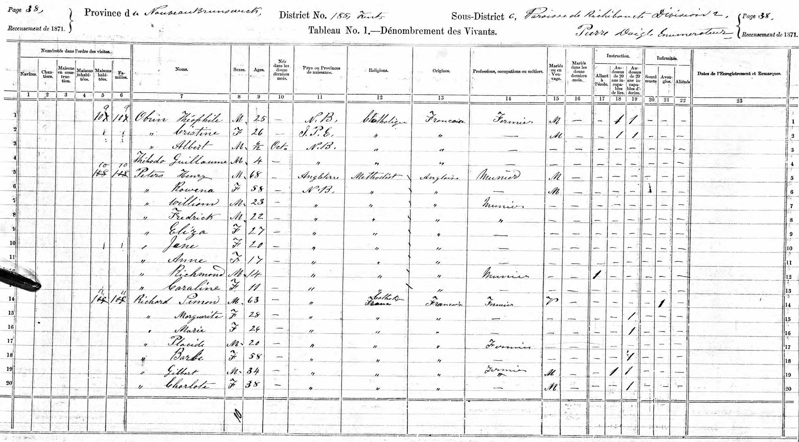

Frederick Smallwood Peters 1848 - 1940
[ Home ] | [ Calendar ] | [ Surnames Index ] | [ Census Index ] | [ Family History ]A miller and the child of Henry Peters and Rowena Atkinson, Frederick Peters, the second cousin three-times-removed on the father's side of Nigel Horne, was born in Richibucto, Kent, New Brunswick, Canada on Mar 22, 18481,2,3,4,5,6,7,8,9,10,11,12, was baptized there on May 1, 1849 and married Celia Colpitts (with whom he had 5 children: Thomas A, Robert, Roy Arthur, Lilly Victoria and Frederick Stanley) on Nov 3, 1875.
During his life, he was living in Kings, New Brunswick, Canada in 18511; at his birthplace in 18612 and in 187112 (the same place as his father had been living in 1861); in Kent, New Brunswick, Canada in 18813; and at his birthplace in 18914, in 19015 (the same place as his mother had been living in 1871), in 191113 and on Jun 1, 19217.
He died on Feb 16, 1940 in Rexton, New Brunswick11 and was buried at Richibucto Protestant Cemetery, Richibucto, New Brunswick on Feb 18, 194011.
Parents
- Henry Warman was born c. 1803
- Rowena Noble Charlotte was born on Jul 15, 1815
Children
- Thomas A was born on Sep 30, 1878
- Robert was born c. 1882
- Roy Arthur was born on Dec 11, 1883
- Lilly Victoria was born on Oct 1, 1886
- Frederick Stanley was born on Jan 23, 1888
Citations
- 1851 Census of Canada East, Canada West, New Brunswick, and Nova Scotia Ancestry.com Operations Inc (Relation to Head of House: Nephew)
- 1861 Census of Canada Ancestry.com Operations Inc (Relation to Head of House: Son)
- 1881 Census of Canada Ancestry.com Operations Inc (Marital Status: Married)
- 1891 Census of Canada Ancestry.com Operations Inc (Marital Status: Married; Relation to Head of House: Head)
- 1901 Census of Canada Ancestry.com Operations Inc (Marital Status: Married; Relation to Head of House: Head)
- 1911 Census of Canada Online publication - Provo, UT, USA: Ancestry.com Operations Inc, 2006. .Original data - Library and Archives Canada. Census of Canada, 1911. Ottawa, Ontario, Canada: Library and Archives Canada, 2007. http://www.collectionscanada.gc.ca/databases/census-19
- 1921 Census of Canada Ancestry.com Operations Inc (Marital Status: Married; Relation to Head of House: Chef)
- Canada Census 1861 - Findmypast
- Canada Census 1881 - Findmypast
- Canada Census 1901 - Findmypast
- Canada, Find A Grave Index, 1600s-Current Ancestry.com Operations, Inc.
- Kent County, New Brunswick Census, 1871: Eight Subdistricts Ancestry.com Operations Inc
- Canada Census 1911 - Findmypast (was the head of the household)
Media
1891 Census

1871 Canadian Census

Frederick Smallwood Peters - Death Certificate

Canada Census 1911 - CAN/CENSUS/1911/01307417
Canada Census 1901 - CAN/CENSUS/1901/00511879
Canada Census 1881 - CAN/CENSUS/1881/00363832
Family Tree

Generated by ged2site. Last updated on Jun 11, 2024